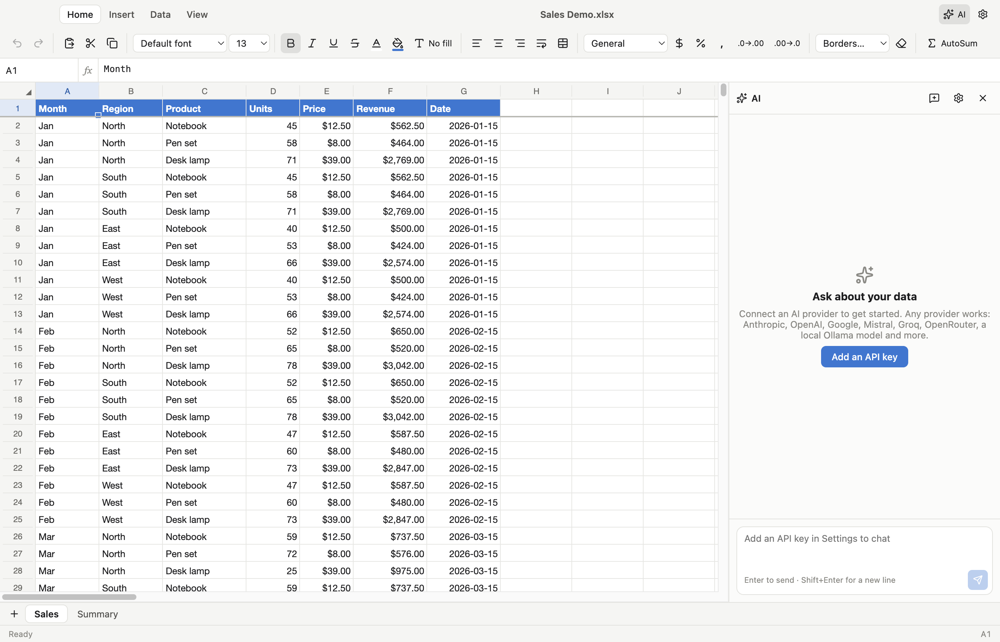

Open and save Excel files, build live dashboards, and work with an AI assistant that uses the model you choose — with your own API key.

SUM, XLOOKUP, SUMIFS, INDEX/MATCH, dates, text, finance and statistics — Excel syntax, live recalculation and cross-sheet references.
Fonts, colors, borders, merged cells, number formats, conditional formatting, frozen panes and filters.
Drag-and-drop charts, KPI cards, tables and notes that update the moment your data changes.
A canvas-rendered grid scrolls smoothly through a million rows.
Native menus, keyboard shortcuts, Finder integration, dark mode, print and PDF export.
Your files stay on your Mac. No account, no telemetry.
Anthropic, OpenAI, Google Gemini, Mistral, Groq, xAI, DeepSeek, Cohere, OpenRouter, Together, Fireworks, Perplexity, Azure — or any OpenAI-compatible endpoint.
Point it at Ollama or LM Studio and keep everything on your machine.
Ask for a summary table, formulas, formatting or a full dashboard. The assistant reads and writes cells, and every change can be undone.
API keys are encrypted with the macOS Keychain and sent only to the provider you picked.
.xlsx.xlsm.xltx.xls.xlsb.ods.numbers.csv.tsv.txt.xml.html.dif.slk.dbf.prn
git clone https://github.com/chothaniparth/Open-sheets.git
cd open-sheets
npm install
npm run dev # run from source
npm run dist:mac # build the .dmg